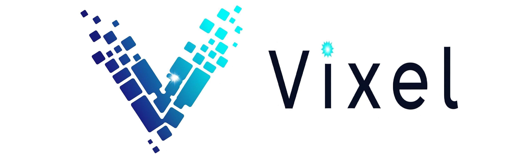

Filtro de Rutas
●
IDA
●
VUELTA
📍 Centrar GPS
Esperando datos...
📡 SIM808 · Datos reales
⬆️
Enviado
--
⬇️
Recibido
--
📊
Total
--
🔄
Envíos
--
⚡
Tasa
--
🕐
Uptime dispositivo
--:--:--
Estadísticas
🔴 IDA
0
T2 → T1
🔵 VUELTA
0
T1 → T2
⏳ Esperando salida
Salida:
--:--:--
Llegada:
--:--:--
Tiempo:
00:00:00
Vel. media:
-- km/h
Distancia:
-- km
Distancia a ruta
--
metros
Desvíos
0
Sin desvíos registrados
🔄 Reiniciar
📋 Ver historial
📋 Historial de viajes
✕